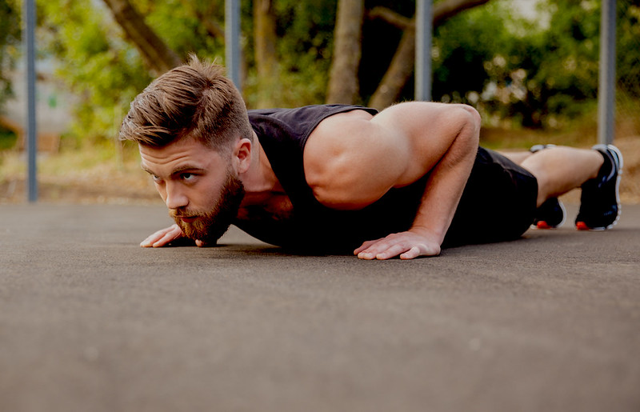
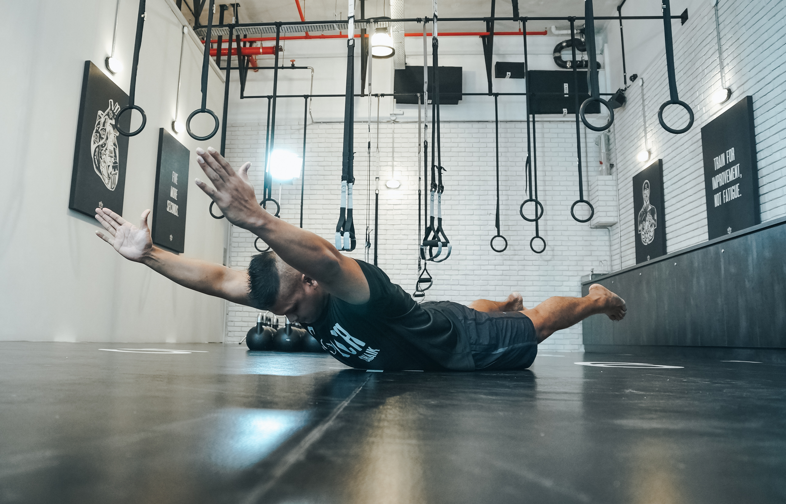
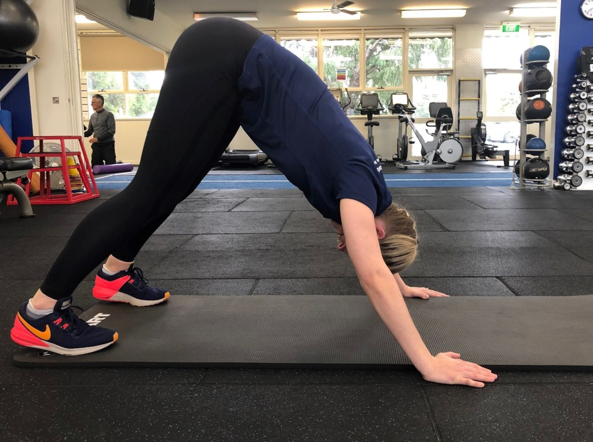
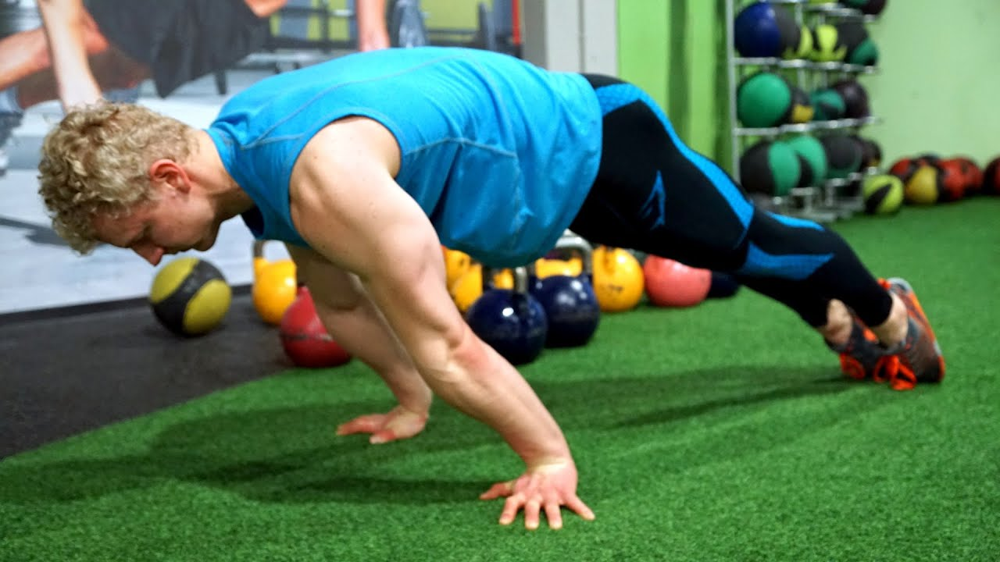
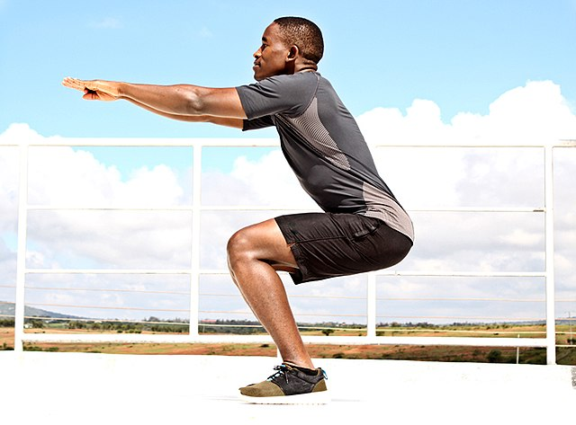
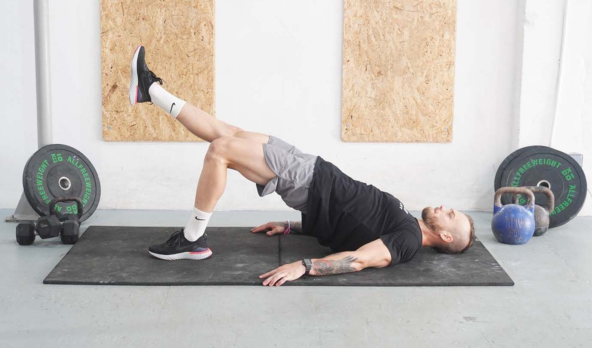
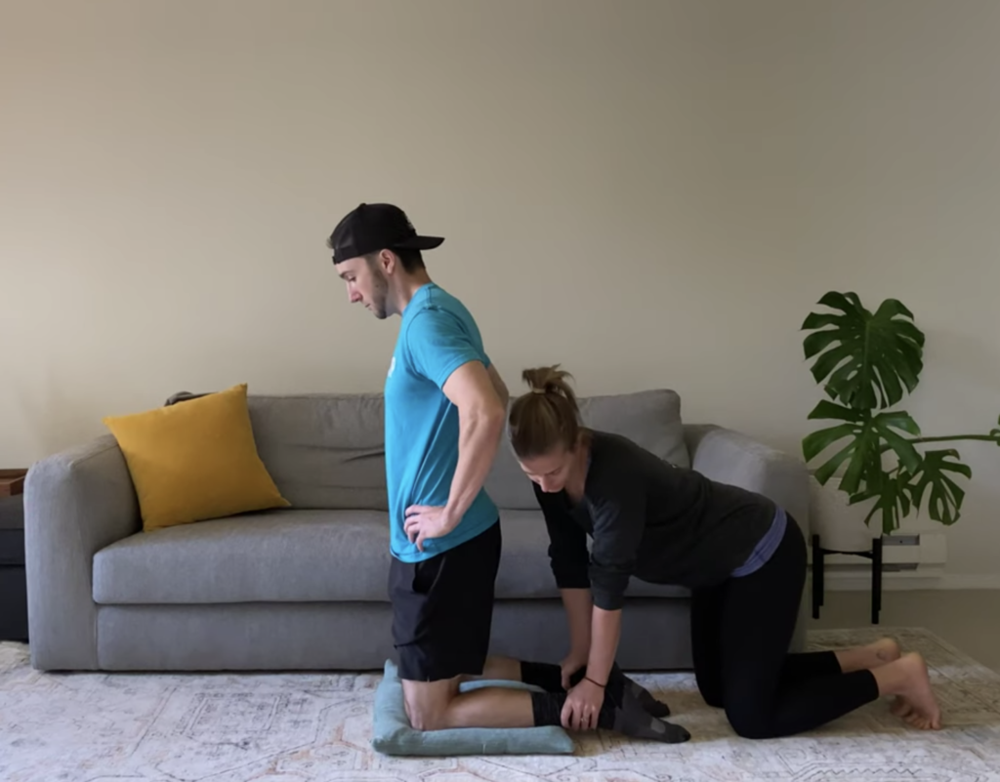
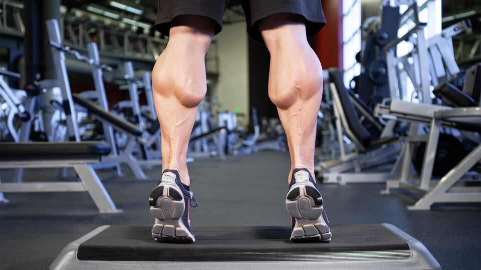

Push-Ups
The most common exercise for your upper body such as your chest, shoulders, and arms.
- Have your hands and feet touch the floor, while keeping your body aligned straight. This is known as the
plank position.
- Hands shouldn't be above or far from shoulders.
- Then bend your elbows and slowly lower yourself down to the floor.
- After that, push away from the floor back into your original position.
Notes: Take your time and have a tempo with your push-ups.

Superman
This exercise is great for working the muscles that are around your spine.
- Lie and face the floor with your arms straight in front of you.
- Lift your arms and legs upwards away from the floor.
- Hold that position for 2-3 seconds.
- Bring your arms and legs back down to the floor.
Notes: Try not bend your knees when lifting your legs off the floor. Keep your head in a
neutral position.

Pike Push-Ups
This exercise uses not just your shoulders but your arms as well, which might make it easier for you to
support your bodyweight and do
handstands in the future.
- Get into the plank position and bend your hips up making a V shape.
- Your head should be aligned with your body and not facing up or down.
- Bend your arms, lowering your body towards the floor but not hitting your head.
- Push against the floor while keeping the same posture.
Notes: Keeping your legs and back straight will make you get the most out of this
exercise.

Pseudo Planche Push-Ups
This exercise is a variant of planche push-ups, where your entire body is lifted off the floor and is only
supported by your arms. But for this exercise, your feet will still be connected to the floor.
- This will require you to get into the plank position but with your arms a bit more closer your abdomen.
- Your toes should be extended and not bending against the floor.
- Bend your elbows and lower yourself to the ground as if you are doing a standard push-up.
- Then bring yourself back up while maintaining the same position with your arms and feet.
Notes: It's best to have a mat to grip and prevent yourself from hitting the floor
hard.

Bodyweight Squats
Doing squats as part of your workout allows you to get into other exercises that requires strong leg
movements much easier.
- Stand with your feet slightly apart from each other.
- Keep your back straight and relax your arms.
- Bend your knees and lower yourself to the point where your thighs are parallel to the ground.
- Hold for a second and push yourself back up the standing position.
Notes: Take your time with each squat and try not to rush through all your reps.

Single Leg Glute Bridge
The single leg glute bridge helps with your core, hips, and hamstrings as well. This can also relieve back
and knee pain.
- Lay on the floor facing upward, spreading your arms away from your sides for stability.
- Bend one of your knees and place your foot on the ground. The other leg should then be fully extended
and foot relaxed.
- With your back still on the floor, bring your hips up making your body parallel to your bent leg.
- Then slowly lower your body against the floor with your first rep done.
Notes: Focus on keeping your other leg straight and move your hips slowly when doing this
exercise.

Nordic Hamstring Curl
This exercise does require you to have something to keep your legs anchored parallel the floor. Either have
someone hold your ankles or you can use a couch that is above the floor to stick your feet under and hold
you in place.
- Move your knees to floor with both legs together. Place your feet under something that could hold your
legs down.
- Have your arms on your hips, keeping your back and head straight looking at the ground in front of you.
- Bend your knees as you slowly fall forward. Be prepared to stop the fall with your hands before you hit
the floor.
- Once you are on the floor, use your legs to bend yourself straight back up without the using your hands.
Notes: Use a mat or a pillow to lessen the pressure on your knees.

Elevated Calf Raises
The last exercise that's on this list is the elevated calf raises. What's great about this exercise is that
it
could be done almost anywhere.
- Have both feet stand on the edge of a elevated surface near the floor.
- The ball of your foot should be on the edge, while your heels are hanging down.
- Use your upper feet to push yourself up as if you are tiptoeing.
- Hold it for a second, then lower your heels back down to the ground.
Notes: Calf raises are also a great way to build stronger ankles and prevent
injuries.
